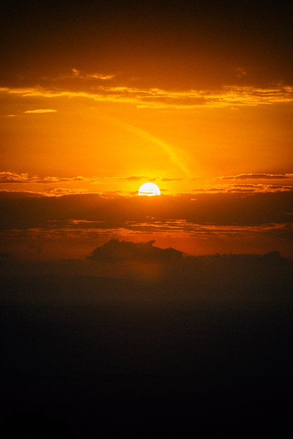

NATURE AND TRAVEL
The Maasai Mara, located in southwestern Kenya, is a breathtaking destination that captures the essence of Africa’s wild beauty. Known for its vast savannahs, dramatic landscapes, and diverse wildlife, the Mara is a haven for nature enthusiasts and travelers alike. It’s famous for the Great Migration, where millions of wildebeest, zebras, and gazelles traverse its plains, drawing predators like lions, cheetahs, and crocodiles in an awe-inspiring display of nature's raw power. Beyond the migration, the region offers opportunities for game drives, cultural encounters with the Maasai people, and stunning views of the iconic African sunset, making it a dream destination for adventurers and photographers alike.

Back